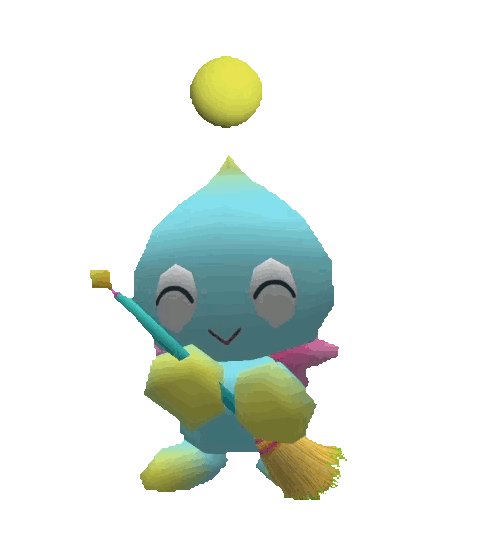

chao

hi i'm chao - your personal know-it-all at your service!
need ideas? try one of these: "four leaf clover", "summer", "sonic the hedgehog", "red panda"
import asyncio from pyodide import create_proxy from chao import get_summary @create_proxy async def on_click(evt): url = document.getElementById("topic").value result = await get_summary(url) pyscript.write("summary", result)
enter a keyword or a topic in the field above and let chao üì∞ retrieve a summary üîé from Wikipedia instantly!
Copy to üìã Clipboard